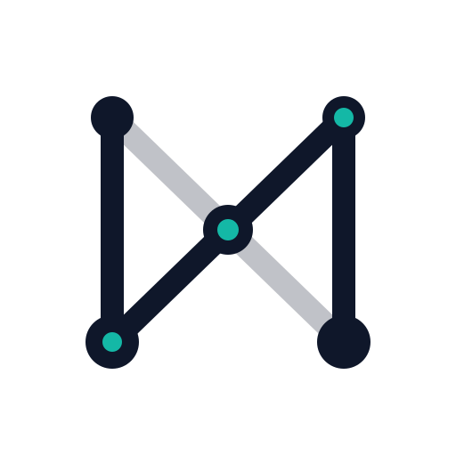
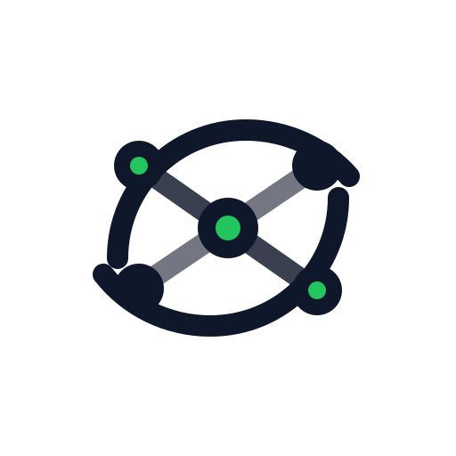
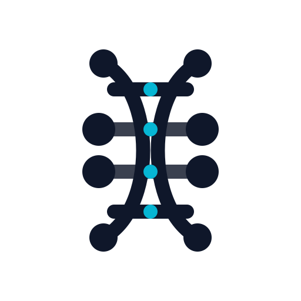
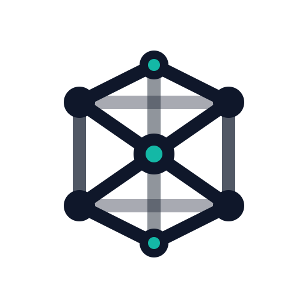
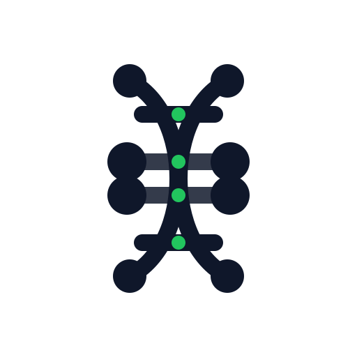
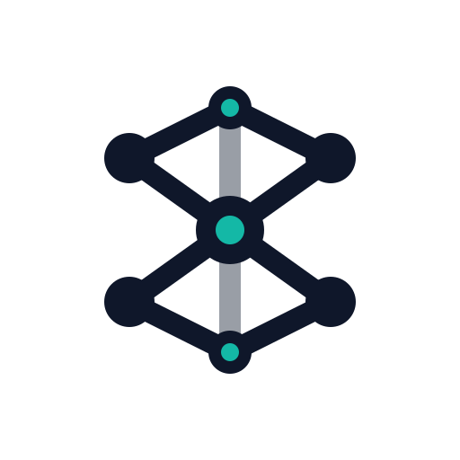
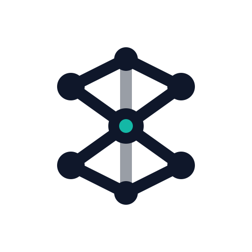
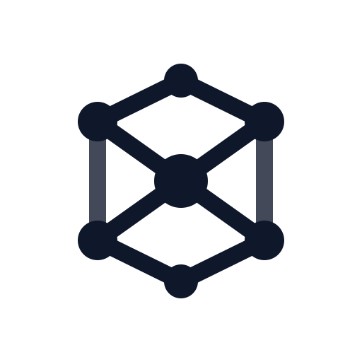

Letter Hint
Concept 1: Implied N
Vertical anchors plus a diagonal bridge create a restrained N shape without turning into a literal lettermark.
Three transparent-background SVG directions: subtle N, abstract network, and DNA-inspired structure.

Vertical anchors plus a diagonal bridge create a restrained N shape without turning into a literal lettermark.

A symmetric node system that reads as connected intelligence rather than typography.

A geometric double-helix silhouette tuned to stay minimal enough for app icon use.

A denser modular graph with a strong center, closer to a concept-map structure than a monogram.

A tighter DNA mark with larger internal spacing so it holds up better at small app-icon sizes.

The closest to the original Mesh Core, but with fewer rails and a stronger center-to-axis emphasis.
A more compact, hexagonal silhouette that feels a bit more disciplined and logo-like.
The most icon-friendly reduction, with larger nodes and cleaner negative space for small-size clarity.
The original cube-like mesh structure preserved as-is, keeping the strongest concept-map geometry.

A slightly simplified version that removes secondary rails and lets the hexagonal silhouette breathe more.

The same structural idea in a single color, aimed at the most robust app-icon and branding usage.